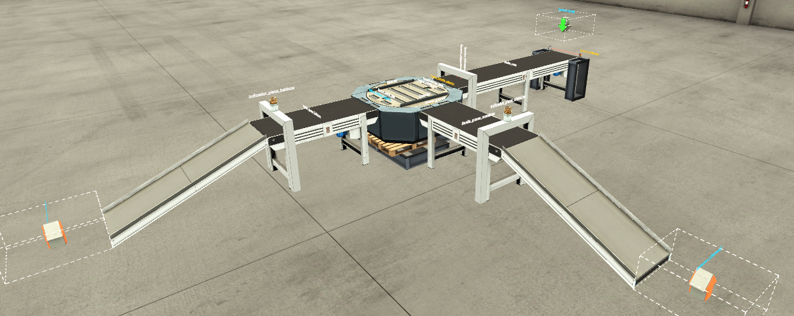
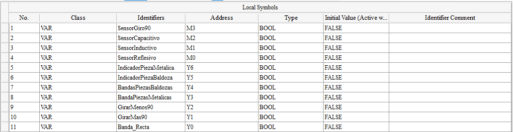
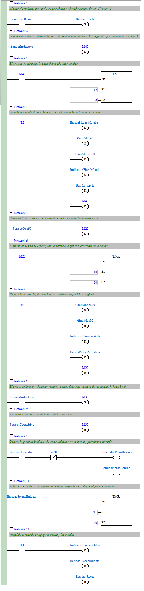

Separador de piezas metálicas y baldosas
En esta actividad debes poner en marcha una celda de clasificación, analizar el programa ladder entregado, relacionar cada sensor y actuador con el proceso físico, y ajustar la simulación hasta que el ciclo funcione correctamente.
1. Objetivo de la actividad
Analizar, simular y explicar el funcionamiento de un sistema automatizado que separa piezas metálicas de piezas no metálicas. En esta guía, las piezas no metálicas se llamarán baldosas.
Identificar entradas, salidas, marcas internas, temporizadores y secuencia de control.
Abrir Factory I/O, cargar la configuración de comunicación y ejecutar el programa PLC.
Relacionar cada línea del ladder con una acción física del proceso.
2. Archivos entregados
| Archivo | Uso en la actividad |
|---|---|
| Proyecto de Factory I/O | Contiene la escena del proceso: bandas transportadoras, sensores, seleccionador, balizas y piezas. |
| Configuración de KEPServerEX | Permite comunicar Factory I/O con el PLC Delta SX2 mediante las variables configuradas. |
| Programa PLC Delta SX2 | Contiene la lógica ladder base que debes revisar, editar si corresponde, descargar al PLC o ejecutar en simulación. |
| Esta guía de laboratorio | Orienta el análisis, la puesta en marcha, la prueba de funcionamiento y la entrega final. |
3. Vista general del proceso
El sistema recibe una pieza desde un depósito. La pieza cae sobre la banda recta y activa el sensor reflectivo. Luego avanza hacia un marco de detección compuesto por un sensor inductivo y un sensor capacitivo. Según la lectura de estos sensores, el programa decide si la pieza debe desviarse como metálica o seguir recto como baldosa.

1.PNG por la captura correspondiente.4. Video de referencia
Observa el video antes de intervenir el programa. El objetivo es reconocer el movimiento esperado de las piezas, el momento en que se activan los sensores y la acción del seleccionador.
5. Mapeo de entradas y salidas
Antes de ejecutar el programa, revisa el mapeo de símbolos. Cada nombre usado en ladder debe corresponder a una dirección física o lógica del PLC.

2.PNG por la captura del mapeo.| Símbolo | Dirección | Tipo | Función en el proceso |
|---|---|---|---|
SensorReflectivo | M0 | Entrada lógica | Detecta la caída inicial de la pieza y habilita la banda recta. |
SensorInductivo | M1 | Entrada lógica | Detecta piezas metálicas. |
SensorCapacitivo | M2 | Entrada lógica | Detecta presencia de pieza bajo el marco de sensores. |
SensorGiro90 | M3 | Entrada lógica | Confirma que el seleccionador llegó a 90°. |
Banda_Recta | Y0 | Salida | Mueve la pieza desde el depósito hasta la zona de clasificación. |
GirarMas90 | Y1 | Salida | Ordena el giro del seleccionador hacia la posición de desvío. |
GirarMenos90 | Y2 | Salida | Ordena el retorno del seleccionador a su posición original. |
BandaPiezasMetalicas | Y3 | Salida | Activa la banda de salida para piezas metálicas. |
BandasPiezasBaldosas | Y4 | Salida | Activa la banda de salida para baldosas. |
IndicadorPiezaBaldosa | Y5 | Salida | Enciende la baliza correspondiente a baldosa. |
IndicadorPiezaMetalica | Y6 | Salida | Enciende la baliza correspondiente a pieza metálica. |
6. Secuencia esperada del proceso
SensorReflectivo. La salida Banda_Recta se enciende.SensorInductivo, la pieza es metálica. Si se activa SensorCapacitivo pero no se confirma metal, se considera baldosa.7. Programa PLC entregado
El programa ladder contiene redes numeradas. Debes revisar cada red y explicar qué condición evalúa, qué salida o marca modifica, y qué efecto físico produce en Factory I/O.

3.PNG por la captura del programa.| Red | Función esperada | Elementos principales |
|---|---|---|
| Network 1 | Activa la banda recta cuando cae una pieza. | SensorReflectivo, Banda_Recta |
| Network 2-4 | Detecta pieza metálica, aplica retardo y activa ruta metálica. | SensorInductivo, M40, T2, GirarMas90, BandaPiezasMetalicas |
| Network 5-7 | Detecta fin de giro, espera salida de la pieza y retorna el seleccionador. | SensorGiro90, M20, T0, GirarMenos90 |
| Network 8-10 | Diferencia lectura inductiva/capacitiva para clasificar baldosa. | SensorInductivo, SensorCapacitivo, M30 |
| Network 11-12 | Aplica retardo para salida de baldosa y apaga banda/baliza. | BandasPiezasBaldosas, T1, Banda_Recta |
8. Puesta en marcha
- Abre el proyecto de Factory I/O entregado.
- Verifica que el driver de comunicación esté configurado según el archivo de KEPServerEX.
- Abre el programa del PLC Delta SX2 en ISPSoft.
- Revisa que los símbolos del programa coincidan con el mapeo de la guía.
- Descarga el programa al PLC o ejecútalo según el modo indicado por el docente.
- Inicia la simulación en Factory I/O.
- Prueba al menos una pieza metálica y una baldosa.
- Ajusta los temporizadores si la pieza no alcanza a llegar, salir o desviarse correctamente.
GirarMas90 y GirarMenos90 queden activos al mismo tiempo. También verifica que las bandas se apaguen al finalizar cada ciclo.9. Análisis por redes
Completa el análisis con tus propias palabras. No basta con escribir el nombre de los contactos o bobinas; debes explicar la relación entre programa y proceso físico.
| Red | ¿Qué condición se evalúa? | ¿Qué acción genera? | ¿Qué ocurre físicamente? |
|---|---|---|---|
| 1 | |||
| 2 | |||
| 3 | |||
| 4 | |||
| 5 | |||
| 6 | |||
| 7 | |||
| 8 | |||
| 9 | |||
| 10 | |||
| 11 | |||
| 12 |
10. Pruebas obligatorias
| Prueba | Resultado esperado | Resultado observado | Corrección realizada |
|---|---|---|---|
| Pieza metálica 1 | Se detecta metal, gira el seleccionador, sale por ruta metálica. | ||
| Pieza metálica 2 | Repite el ciclo sin quedar salidas activas. | ||
| Baldosa 1 | No se activa el desvío, sigue derecho y sale por ruta de baldosas. | ||
| Baldosa 2 | Repite el ciclo con apagado correcto de banda y baliza. | ||
| Prueba mixta | Una pieza metálica y una baldosa se clasifican correctamente en ciclos separados. |
11. Preguntas de análisis
1. ¿Por qué el sensor reflectivo activa la banda recta al inicio del proceso?
2. ¿Qué diferencia lógica existe entre detectar una pieza metálica y detectar una baldosa?
3. ¿Para qué se usa el temporizador antes de girar el seleccionador?
4. ¿Qué problema podría ocurrir si el seleccionador vuelve demasiado rápido a su posición original?
5. ¿Qué salidas deben apagarse al terminar el ciclo de una pieza metálica?
6. ¿Qué salidas deben apagarse al terminar el ciclo de una baldosa?
7. ¿Qué ajustarías si la pieza metálica choca con el seleccionador o no alcanza a desviarse?
12. Entrega
Entrega un informe breve con capturas de la simulación funcionando, tabla de análisis por redes, resultados de pruebas y explicación de los ajustes realizados.
13. Pauta de evaluación
| Criterio | Logrado | Medianamente logrado | No logrado |
|---|---|---|---|
| Relaciona entradas y salidas con el proceso físico. | Identifica y explica correctamente sensores, actuadores y marcas. | Identifica la mayoría, pero con explicaciones incompletas. | No logra relacionar el programa con el proceso. |
| Comprende la secuencia de clasificación. | Explica correctamente ruta metálica, ruta baldosa y retorno del seleccionador. | Explica la secuencia general, pero omite condiciones relevantes. | No explica la secuencia o la confunde. |
| Ajusta temporizadores de forma justificada. | Ajusta tiempos según el movimiento real de las piezas y justifica los cambios. | Ajusta tiempos por ensayo, pero con justificación débil. | No ajusta o deja el proceso desincronizado. |
| Simula y valida el funcionamiento. | Prueba piezas metálicas y baldosas con resultados correctos. | Logra funcionamiento parcial o inestable. | No logra simular el proceso correctamente. |
| Documenta el análisis. | Entrega análisis claro, ordenado y con evidencias. | Entrega análisis incompleto o poco preciso. | No entrega evidencias suficientes. |